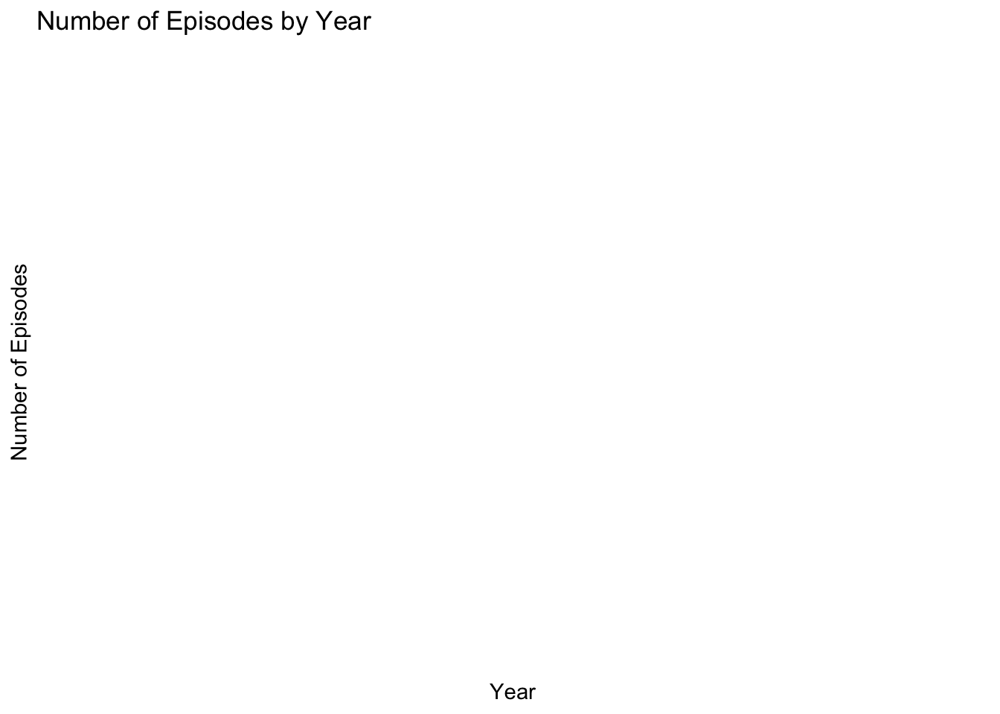
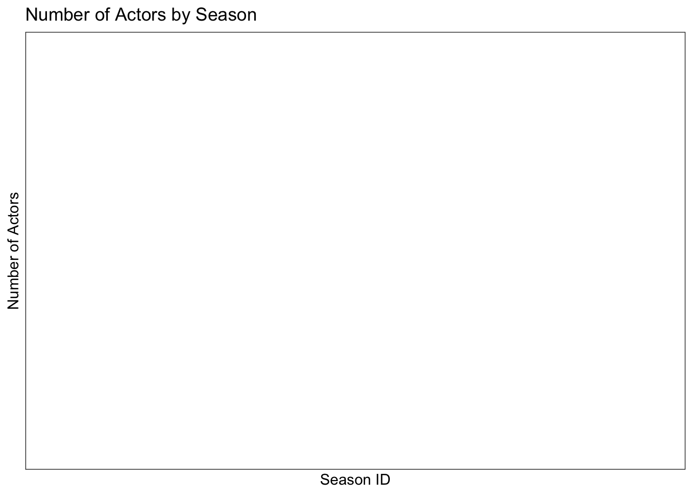

Code
library(dplyr)
library(tidyr)
library(ggplot2)
library(readr)
knitr::opts_chunk$set(echo = TRUE)Pradhakshya Dhanakumar
May 6, 2023
Actors Data
Rows: 2306 Columns: 4
── Column specification ────────────────────────────────────────────────────────
Delimiter: ","
chr (4): aid, url, type, gender
ℹ Use `spec()` to retrieve the full column specification for this data.
ℹ Specify the column types or set `show_col_types = FALSE` to quiet this message.# A tibble: 6 × 4
aid url type gender
<chr> <chr> <chr> <chr>
1 Kate McKinnon /Cast/?KaMc cast female
2 Alex Moffat /Cast/?AlMo cast male
3 Ego Nwodim /Cast/?EgNw cast unknown
4 Chris Redd /Cast/?ChRe cast male
5 Kenan Thompson /Cast/?KeTh cast male
6 Carey Mulligan /Guests/?3677 guest andy Casts Data
Rows: 614 Columns: 8
── Column specification ────────────────────────────────────────────────────────
Delimiter: ","
chr (1): aid
dbl (5): sid, first_epid, last_epid, n_episodes, season_fraction
lgl (2): featured, update_anchor
ℹ Use `spec()` to retrieve the full column specification for this data.
ℹ Specify the column types or set `show_col_types = FALSE` to quiet this message.# A tibble: 6 × 8
aid sid featured first_epid last_epid update_anchor n_episodes
<chr> <dbl> <lgl> <dbl> <dbl> <lgl> <dbl>
1 A. Whitney Brown 11 TRUE 19860222 NA FALSE 8
2 A. Whitney Brown 12 TRUE NA NA FALSE 20
3 A. Whitney Brown 13 TRUE NA NA FALSE 13
4 A. Whitney Brown 14 TRUE NA NA FALSE 20
5 A. Whitney Brown 15 TRUE NA NA FALSE 20
6 A. Whitney Brown 16 TRUE NA NA FALSE 20
# ℹ 1 more variable: season_fraction <dbl>Seasons Data
Rows: 46 Columns: 5
── Column specification ────────────────────────────────────────────────────────
Delimiter: ","
dbl (5): sid, year, first_epid, last_epid, n_episodes
ℹ Use `spec()` to retrieve the full column specification for this data.
ℹ Specify the column types or set `show_col_types = FALSE` to quiet this message.# A tibble: 6 × 5
sid year first_epid last_epid n_episodes
<dbl> <dbl> <dbl> <dbl> <dbl>
1 1 1975 19751011 19760731 24
2 2 1976 19760918 19770521 22
3 3 1977 19770924 19780520 20
4 4 1978 19781007 19790526 20
5 5 1979 19791013 19800524 20
6 6 1980 19801115 19810411 13There are three sets of data in the SNL dataset.
The first set, called SNL actors, lists all 2306 cast and guest members who have appeared on SNL. Each row corresponds to an individual actor and includes a link to more information about their gender and whether they were a cast member or guest.
The second set, SNL casts, is more extensive than SNL actors in terms of variables and includes information on 614 cast members, but not guests. It provides details about the seasons each cast member was on the show, the number of episodes in each season, and the dates of the first and last episodes for each season the cast member appeared. First and last episode information is only included if they differ from the first or last episode of that season, so most values are missing.
The third set, SNL seasons, contains data on the 46 seasons of SNL, such as the year, dates of the first and last episodes, and episode count per season. Each row corresponds to a season.
[1] "aid" "sid" "featured" "first_epid"
[5] "last_epid" "update_anchor" "n_episodes" "season_fraction"[1] "aid" "url" "type" "gender"The first block of code creates a new dataframe df_casts_actors by joining two dataframes df_casts and df_actors on the aid column. The select() function is then used to keep only the columns sid, type, gender, featured, and appearances in the resulting dataframe. This code creates a new dataframe with additional information about the actors who appeared in each season of a TV show.
The second block of code creates another new dataframe df_data by joining the df_seasons dataframe with the df_casts_actors dataframe on the sid column. This code creates a new dataframe with combined information about the seasons and the actors who appeared in each season. The resulting dataframe df_data can be used to explore relationships between various variables such as the number of episodes in a season, the gender of the actors, and the number of appearances, etc.
[1] "sid" "year" "first_epid" "last_epid" "n_episodes"
[6] "type" "gender" "featured" "appearances"[1] "sid" "type" "gender" "featured" "appearances"# A tibble: 0 × 9
# ℹ 9 variables: aid <chr>, sid <dbl>, featured <lgl>, first_epid.x <dbl>,
# last_epid.x <dbl>, year <dbl>, first_epid.y <dbl>, last_epid.y <dbl>,
# n_episodes <dbl>Visual 1: The chart shows the number of episodes by year using the n_episodes and year columns from the joined_data dataframe.

Visual 2: First create a new dataframe with information about actors in each season and then a bar chart to show the number of actors by season.
df_casts_actors <- df_casts %>%
left_join(df_actors, by = "aid") %>%
group_by(sid) %>%
count() %>%
select(sid, n) %>%
rename(appearances = n)
ggplot(data = df_casts_actors, aes(x = sid, y = appearances)) +
geom_bar(stat = "identity", fill = "steelblue") +
labs(x = "Season ID", y = "Number of Actors") +
ggtitle("Number of Actors by Season") +
theme_bw()
---
title: "Challenge 8"
author: "Pradhakshya Dhanakumar"
desription: "Worked with SNL Data "
date: "05/06/2023"
format:
html:
toc: true
code-fold: true
code-copy: true
code-tools: true
categories:
- Challenge 8
- Pradhakshya Dhanakumar
- SNL
- ggplot2
---
```{r}
#| label: setup
#| warning: false
library(dplyr)
library(tidyr)
library(ggplot2)
library(readr)
knitr::opts_chunk$set(echo = TRUE)
```
## Reading Data
Actors Data
```{r}
df_actors <- read_csv("_data/snl_actors.csv")
head(df_actors)
```
Casts Data
```{r}
df_casts <- read_csv("_data/snl_casts.csv")
head(df_casts)
```
Seasons Data
```{r}
df_seasons <- read_csv("_data/snl_seasons.csv")
head(df_seasons)
```
## Describe the Data
```{r}
dim(df_actors)
dim(df_casts)
dim(df_seasons)
```
There are three sets of data in the SNL dataset.
The first set, called SNL actors, lists all 2306 cast and guest members who have appeared on SNL. Each row corresponds to an individual actor and includes a link to more information about their gender and whether they were a cast member or guest.
The second set, SNL casts, is more extensive than SNL actors in terms of variables and includes information on 614 cast members, but not guests. It provides details about the seasons each cast member was on the show, the number of episodes in each season, and the dates of the first and last episodes for each season the cast member appeared. First and last episode information is only included if they differ from the first or last episode of that season, so most values are missing.
The third set, SNL seasons, contains data on the 46 seasons of SNL, such as the year, dates of the first and last episodes, and episode count per season. Each row corresponds to a season.
## Tidy and Mutate Data
```{r}
df_actors<- na.omit(df_actors)
df_casts<- na.omit(df_casts)
df_seasons<- na.omit(df_seasons)
```
```{r}
colnames(df_casts)
colnames(df_actors)
```
```{r}
df_actors <- df_actors %>%
mutate(appearances = rowSums(select(., starts_with("ep_")), na.rm = TRUE))
```
## Join Data
The first block of code creates a new dataframe df_casts_actors by joining two dataframes df_casts and df_actors on the aid column. The select() function is then used to keep only the columns sid, type, gender, featured, and appearances in the resulting dataframe. This code creates a new dataframe with additional information about the actors who appeared in each season of a TV show.
The second block of code creates another new dataframe df_data by joining the df_seasons dataframe with the df_casts_actors dataframe on the sid column. This code creates a new dataframe with combined information about the seasons and the actors who appeared in each season. The resulting dataframe df_data can be used to explore relationships between various variables such as the number of episodes in a season, the gender of the actors, and the number of appearances, etc.
```{r}
df_casts_actors <- df_casts %>%
left_join(df_actors, by = "aid") %>%
select(sid, type, gender, featured, appearances)
```
```{r}
df_data <- df_seasons %>%
left_join(df_casts_actors, by = "sid")
```
```{r}
colnames(df_data)
colnames(df_casts_actors)
```
```{r}
joined_data <- df_casts %>%
select(-update_anchor, -season_fraction, -n_episodes) %>%
left_join(df_seasons, by="sid")
joined_data
```
```{r}
colnames(joined_data)
```
## Visualizations
Visual 1:
The chart shows the number of episodes by year using the n_episodes and year columns from the joined_data dataframe.
```{r}
library(ggplot2)
# Create a bar chart of number of episodes by year
ggplot(data = joined_data, aes(x = year, y = n_episodes)) +
geom_bar(stat = "identity", fill = "steelblue") +
labs(x = "Year", y = "Number of Episodes") +
labs(title="Number of Episodes by Year") +
theme_minimal()
```
Visual 2:
First create a new dataframe with information about actors in each season and then a bar chart to show the number of actors by season.
```{r}
df_casts_actors <- df_casts %>%
left_join(df_actors, by = "aid") %>%
group_by(sid) %>%
count() %>%
select(sid, n) %>%
rename(appearances = n)
ggplot(data = df_casts_actors, aes(x = sid, y = appearances)) +
geom_bar(stat = "identity", fill = "steelblue") +
labs(x = "Season ID", y = "Number of Actors") +
ggtitle("Number of Actors by Season") +
theme_bw()
```